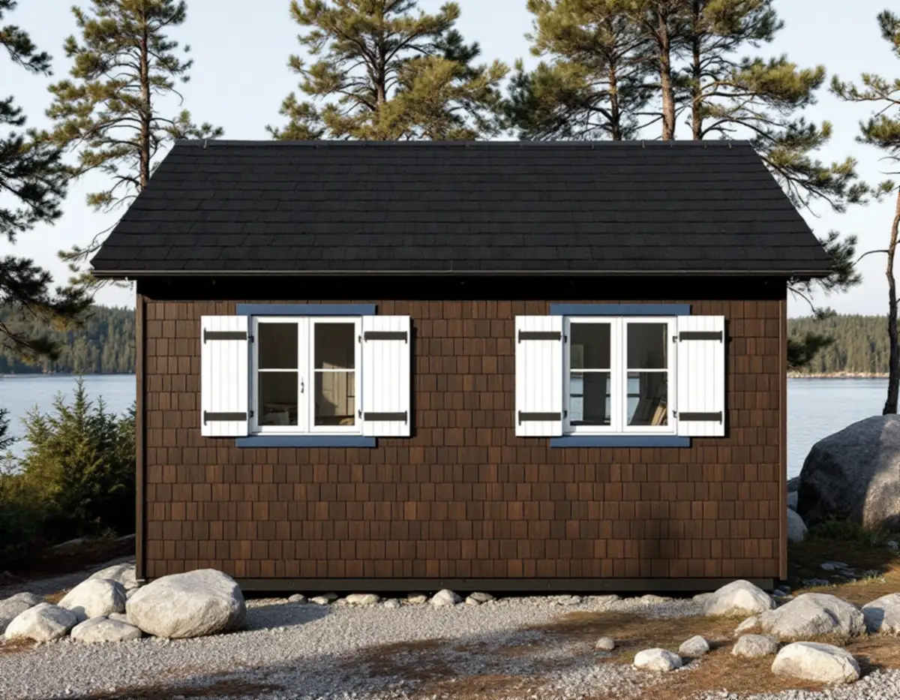
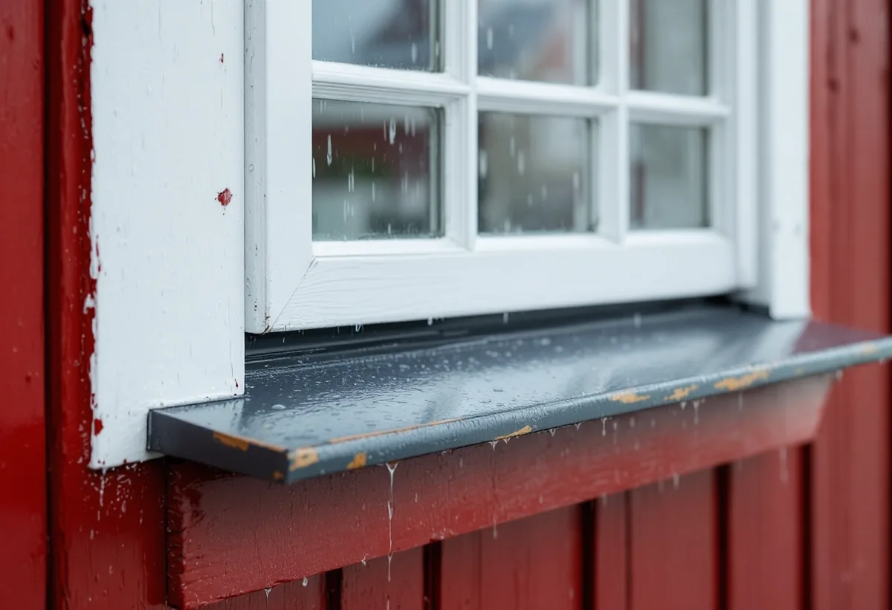

Platsbesök
Fönstren sorteras efter husets delar och skick, och väderutsatta sidor noteras.
I Kolbotten och Västra Vadviken på Dalarö står hus som en gång byggdes som sportstugor och som sedan ofta har byggts till i samma stil. I lägen mot vattnet får fönstren ta mycket regn och blåst. Geal Entreprenad AB byter och renoverar fönster på Dalarö, i Västerhaninge, Handen och resten av kommunen och lämnar ett skriftligt kostnadsförslag efter ett gratis platsbesök.

Inför en ny detaljplan gjordes en kulturmiljöinventering av Kolbotten och Västra Vadviken väster om Dalarö, som finns på Haninge kommuns webbplats. Västra Vadviken styckades enligt en plan från 1932 i 92 tomter, och enligt inventeringens källor byggdes där främst små sportstugor, sällan villor. För Kolbotten finns i bygglovsarkivet flera ritningar på monteringsfärdiga hus från svenska trähusfabrikanter.
Den första generationens sportstugor i landet var enligt inventeringen ofta allmogeinspirerade, med tjärade eller rödfärgade fasader och småspröjsade fönster. Stugorna i Kolbotten och Vadviken har däremot en mer modern prägel. Fönstren har oftast en eller två lufter utan spröjs, fönsterluckor med jalusier är vanliga och många hus har figursågade foder.
Inventeringen konstaterar också att bebyggelsen är väl omhändertagen och flitigt underhållen. Det har lett till att bara ett fåtal byggnader har kvar sin ursprungliga form, fasadbeklädnad och sina fönstersnickerier.

Ett vanligt mönster i den här typen av områden är enligt inventeringen att först bygga en mindre stuga, för att sedan bygga till, bygga en större bredvid eller riva den gamla. Huvudbyggnaden har ofta byggts till i samma stil som ursprunget. Resultatet blir hus där varje del har fönster från sin egen tid.
När inventeringen pekar ut vilka byggnader som har kulturhistoriskt värde är ett av kriterierna att de har ursprungliga fönster, dörrar och andra yttre detaljer. Kriteriet godtar också att delarna har bytts mot nya med ursprungligt eller tidstypiskt utseende. Det är en bra utgångspunkt även för ett hus som inte är utpekat.
För ett fönsterbyte betyder det att vi först sorterar fönstren efter husets delar. De äldsta kan ofta renoveras, medan senare tillbyggnaders fönster kan bytas till en modell med samma luftindelning och foderform som stugan. Gäller bytet ett hus som ska användas året runt, se även byggföretag i Haninge.
Boverket nämner förväntade regnmängder och vindförhållanden bland de faktorer som påverkar sannolikheten för fuktskador på fönster. Till listan hör också en bruten tvåstegstätning vid monteringen, bleck som lutar fel eller inte sluter tätt mot väggen och fönstrets förmåga att leda bort och torka ut vatten. Energiguiden tillägger att gamla tätningar ofta släpper in vatten under fönstren i lägen med slagregn.
Risken minskar enligt Boverket när fönstret sitter väderskyddat, till exempel en bit in i väggen eller under en utskjutande takfot. Sitter det för långt in kan det i stället bli en köldbrygga. På en gavel utan takutsprång kan ett skärmtak ge skydd, och under fönsterblecket bör det finnas en dränerande och ventilerande spalt.
Kondens på utsidan av ett nytt, välisolerat fönster är normalt ingen skada. I kopplade bågar kan fuktig inomhusluft däremot kondensera på insidan av det kalla yttre glaset, och enligt Boverket ger kondens mellan rutorna fuktskador framför allt på bågarna. Ska fasaden runt fönstren ses över samtidigt, läs om fasadrenovering i Haninge.
Haninge kommun räknar nya fönster eller dörrar som en fasadändring. Bygglov behövs när byggnaden eller området är särskilt värdefullt, och för andra byggnader än en- och tvåbostadshus när ändringen inom detaljplan görs mot en allmän plats. Varsamhetskravet gäller oavsett, och nya åtgärder ska anpassas både till huset och till miljön runt omkring.
Krävs lov vill kommunen ha en situationsplan på en tomtkarta, fotografier av byggnaden och ett förslag till kontrollplan. Den som bygger ansvarar för att göra en riskanalys och för att kontrollplanen följs. Bygglov och startbesked ska finnas innan arbetet börjar.
Fönstren sorteras efter husets delar och skick, och väderutsatta sidor noteras.
Smygar, bröstningar och bleck kontrolleras för vatten som läckt in.
Vi ser efter om huset eller området är särskilt värdefullt enligt kommunens underlag.
Renovering, nya fönster, bleck och luckor står var för sig i ett skriftligt förslag.
Fönstren monteras med tvåstegstätning och bleck som leder vattnet ut från väggen.
Vi visar hur luckor, bågar och tätningslister sköts i ett utsatt läge.
Att byta fönsterbleck och att reparera eller byta ut fönster i ett småhus är rotarbete enligt Skatteverket. Avdraget är upp till 30 procent av arbetskostnaden, högst 50 000 kr per person och år och högst 75 000 kr tillsammans med rutavdrag.
Myggnät och solfilm ger inget avdrag, och inte heller material eller resor. Avdraget görs direkt på fakturan.
Hur många fönster som kan renoveras, om fönsterluckor och figursågade foder ska behållas eller göras nya, hur mycket fuktskadat trä i smygar och bröstningar som ska bytas, om nya bleck behövs och hur huset nås. Kostnadsförslaget får du skriftligt efter besöket, som är gratis.
Byta eller renovera fönster.
Fönsterbyte i Stockholm →Takbyte, takbesiktning och plåtarbeten.
Takläggare i Haninge →Dalarö, Vendelsö och Brandbergen.
Takrenovering i Haninge →Skjutfält, kulturmiljö och skärgårdstomter.
Attefallshus i Haninge →Vakuumtoalett, sluten tank och öarna.
Badrumsrenovering i Haninge →Nytt hus och tillbyggnad i omvandlingsområden.
Byggföretag i Haninge →Mustiga 50-tal och pastell.
Fasadmålning i Haninge →Tegelvillor, grupphus och panelade gårdar.
Fasadrenovering i Haninge →Gårdens fönster, från boningshus till ladugård.
Fönsterrenovering i Haninge →Egnahem, sportstugor och hus i sluttning.
Golvläggare i Haninge →Laga och slipa trägolvet i villan.
Golvslipning i Haninge →Egnahem, grupphus och Dalarö.
Köksrenovering i Haninge →Egnahem, grupphus och sommarvillor i Haninge.
Målare i Haninge →Falsad plåt, sjöbodar och beslag i Haninge.
Plåtslagare i Haninge →Verandor, altaner och skärmtak.
Snickare i Haninge →Kontrollplan och riskbedömning vid takbyte.
Takbyte i Haninge →Ny tapet och gamla lager i äldre villor.
Tapetsering i Haninge →Lov, situationsplan och kontrollplan.
Tillbyggnad i Haninge →Folkhemsvillan inifrån.
Totalrenovering i Haninge →